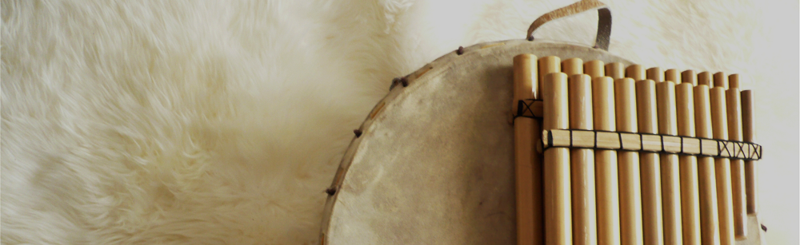
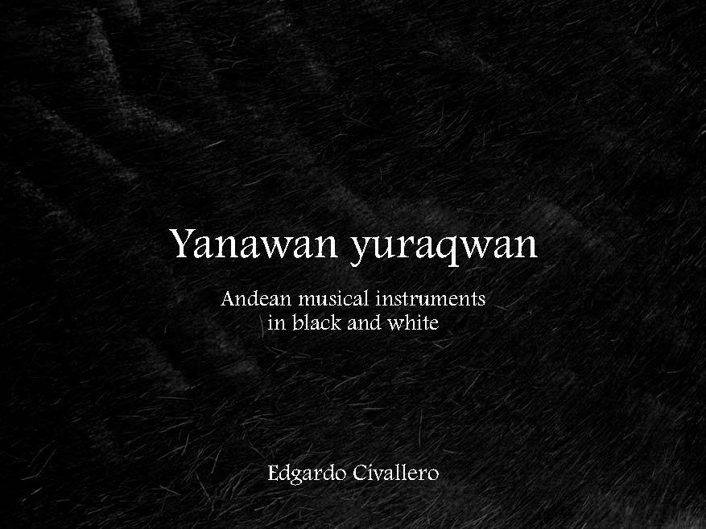
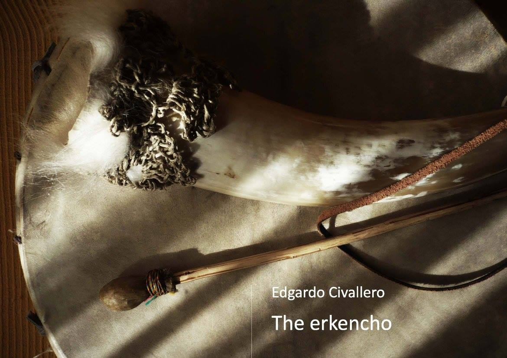
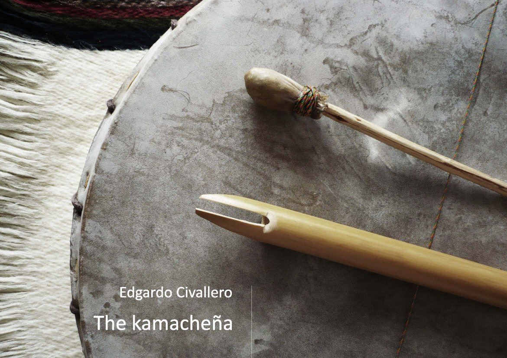
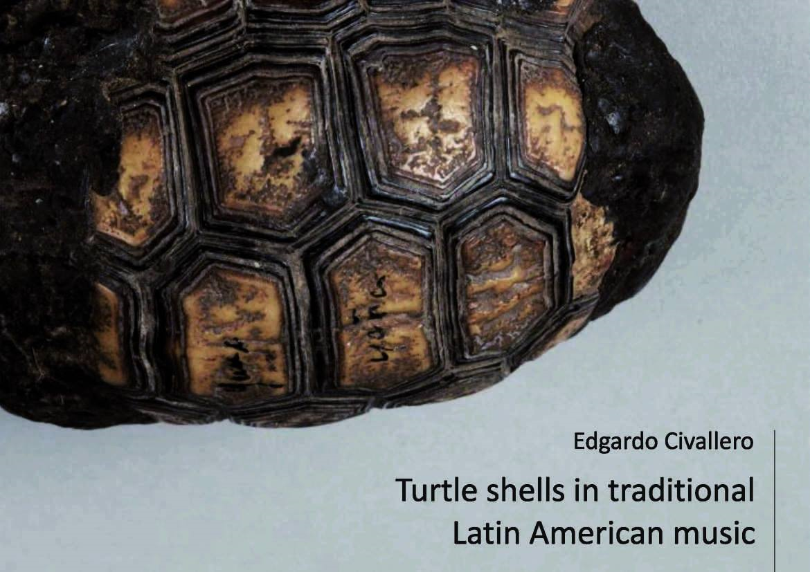

Digital books on music. Series 1
Home > Publications > Digital books on music. Series 1
This collection brings together the works now designated as Series 1, a body of books developed gradually since 2012. First issued through Wayrachaki Editora, they underwent multiple revisions and re-editions over the years before being consolidated and republished as archival editions by El Zorro de Abajo Editora in 2025. These texts belong to an earlier phase of work, grounded primarily in bibliographic research and organological synthesis, and they are preserved here as a coherent and unified corpus.
From 2026 onward, a new cycle begins. Series 2, also published by El Zorro de Abajo Editora, moves into a different register — one that approaches musical instruments through layered, narrative, and ecologically grounded forms of inquiry.
These documents are distributed for free reading, following Instrumentarium's copyright policies.

01. Yanawan yuraqwan. Andean musical instruments in black and white
Photo album with 15 black and white images accompanied by brief descriptions, introducing some of the most interesting traditional Andean musical instruments: quenas, pusi p'ias, sikus, toyos, rondadores, ocarinas, charangos, pingullos, pinkillos, waka pinkillos, waylla qhepas and wank'aras.
[Download].

02. The erkencho
A brief guide introducing the reader to the structure, context and use of a particular idioglottal clarinet (erkencho, erquencho, erke, erque, irqi) played in southern Bolivia and northwestern Argentina, composed of a bell and a small reed body with a single vibrating tongue, and which retains in its notes an ancient, traditional Andean repertoire with pre-Hispanic roots, always accompanied by the drum called caja.
[Read].

03. The kamacheña
A brief guide introducing the reader to the location, structure and use of a little-known Andean aerophone (quenilla, flauta de Pascua, flautilla, quena, flautilla jujeña) performed in southern Bolivia (department of Tarija) and northwestern Argentina (provinces of Salta and Jujuy): a flute played with one hand alongside the vibrant accompaniment of the drum caja, which is used for keeping alive very ancient repertoires.
[Download].

04. Turtle shells in traditional Latin American music
A short introduction to a world of shaken and rubbed shells, from the forests of southern Chaco to the mountains of Central Mexico, including the Amazonia, the Orinoquia, the Caribbean coasts, and covering a wide range of cultures and music.
[Download]

05. Musical instruments of the Chiquitano people
A brief guide to the flutes and drums of a society native to the Bolivian lowlands: the Chiquitano. Known for being the heirs of the Jesuits' Baroque musical tradition, they also maintain a music of their own, still performed by small ensembles in each village.
[Download]